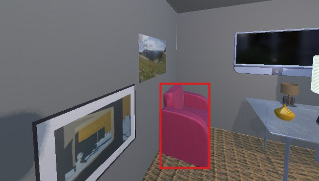
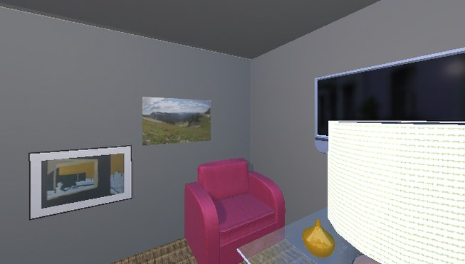
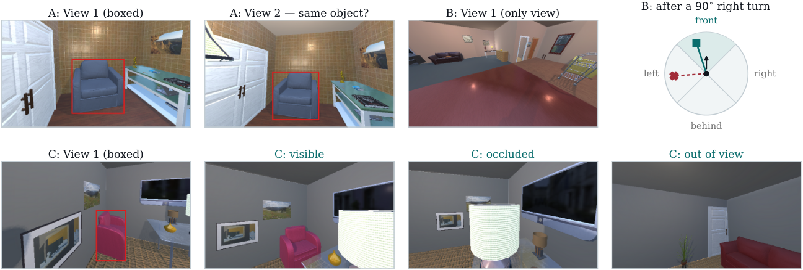
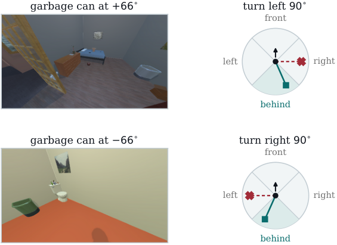
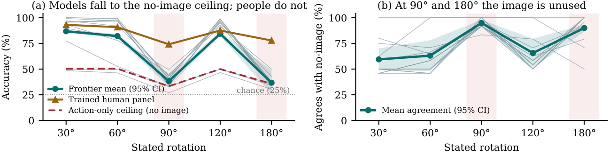
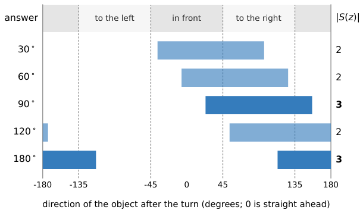

At 90°, 94.8% of frontier answers are identical to what the same model gives with no image at all. At 180° it is 89.9%. The pooled score hides both.
Task B — where the failure is
the turn leaves 3 of 4 answers reachable
At 90° the twelve frontier configurations average +5.0 over what the stated turn alone reaches. None of them exceeds 50%.
A teapot sits on the table in front of you. Turn 90° to the right and it is on your left — the teapot has not moved, you have. Robots and augmented-reality assistants do this constantly, and they must also tell whether an object has left the camera's view or is hidden behind something else. EgoShift puts that to vision–language models in simulated indoor rooms, one stated turn at a time.
Two views of one room, a box drawn in each. A control, provisional, and no difficulty claim rests on it.
5,838 questionsOne view and a stated in-place turn, never the view afterwards. The only task whose question names an action.
1,098 questionsVisible, out of view, or occluded, after the camera has moved. Matched triples, one question per answer.
5,850 questionsThe first view boxes the target. Pick what happens next — each is a real second view from the same room.
The chair is still drawn in the second view, so the answer is visible.



Each task answers a different question and the three are never combined into one score. Two of them come out well, and they are what make the third one readable.
Models find a boxed object and match it across two views under this renderer. That is the whole job of a control: a low Task-B score cannot be blamed on the imagery. The task carries no difficulty claim of its own, and it is provisional.
Blinded. With both images withheld the twelve frontier configurations average 46.1% against a 50.0% random rate, and none exceeds 53.3%. One view alone leaves the open models at the chance rate.
Pooled, this reads as nearly matching the trained panel's 84.6%. Read one turn at a time, it splits in two: high at 30°, 60° and 120°, and down at the action-only bound at 90° and 180°. The rest of this page is about that split.
Blinded. All twelve frontier configurations score 42.5 to 44.2%, mean 43.4% — this subset's action-only bound. A spread of 1.7 points across twelve systems makes that a property of the questions, not of any model.
The difficulty sits in the occluded class, not in visible or out of view. The best model reaches 88.0% on occluded questions, above the trained panel's 74.4%, so the human number is not treated as a bound there either. Every target appears once with each answer, so recalling an object's usual answer scores one in three.
Blinded. 29.7% against a 33.3% random rate, and no system exceeds 35.8%. A model cannot answer Tasks A and C from the wording or a single view.
Tasks A and C state no action, so no stated turn can narrow their answers; the answer balancing described further down protects them instead. Only Task B names an action, which is why only Task B has a bound to be read against — and why the sections that follow are about what happens there.
Task-B accuracy is high at 30°, 60° and 120° and drops sharply at 90° and 180°. A 120° turn is answered correctly more than twice as often as a 90° one, so a pooled score hides the difference.
what the stated turn alone reaches mean of twelve frontier configurations
The 95% scene-clustered bootstrap intervals over 2,000 draws are [85.5, 88.1] at 30°, [80.0, 84.3] at 60°, [32.8, 44.1] at 90°, [82.3, 86.3] at 120° and [25.9, 48.8] at 180°. The 120° and 90° intervals do not overlap. The 180° cell holds 56 questions, so the two hard turns are also reported together: 38.0% over 290 questions, interval [32.9, 43.1].
The failure is not many different spatial mistakes. It is one mistake made repeatedly, and it is specific enough to state in a sentence.
The straight-ahead rule. The model ignores where the target actually is, assumes it lies straight ahead, and then applies the stated turn correctly.
It matches 98.7% of Claude Opus 5's answers at 90° and 100.0% at 180°, while agreeing with the correct answer only about a third of the time there. Counting every frontier mistake, it alone accounts for 82.0% of 3,670 errors, and for 86.9 to 100.0% of the errors made by the eight strongest configurations.
A simpler account — that these models never update at all — does not fit. A model answering in the un-rotated starting frame would score 25.0%, and that rule matches what the models said on only 27 to 33% of 90° questions. The pattern fits a rotation applied to an assumed direction rather than to the one in the picture.
At 90° Claude Opus 5 answers every to the left and to the right question correctly, against 1.3% of in front and 2.6% of behind. At 180° the pattern reverses. The stated turn decides which axis is wrong.
Each model is compared with its own no-image answer on identical questions. The two agree on 59.4%, 63.0% and 65.6% at 30°, 60° and 120° — against 94.8% at 90° and 89.9% at 180°, over 24 questions per turn per model, intervals [91.3, 97.9] and [86.5, 93.2]. Neither model ranking nor question difficulty explains the gap, because this compares a model with itself.
Three configurations ran at a raised reasoning setting against their own default. All three score lower at 90° and 180°, even where the pooled score rises. The extra computation goes to the turns where the failure is not.

What this does not settle. The straight-ahead rule is an interpretation of the evidence, not an established mechanism. Three tests converge on it, but the matched counterfactuals that would settle it — varying the stated turn while holding the picture fixed — have not been run. A model behaving this way for another reason would produce the same evidence.
Real questions from the development split, all three tasks, drawn at random and never ending. You get exactly what the model gets. On Task B no box is drawn on the object, because the benchmark draws none.
Task B — primary
Nine paid lab annotators per task returned 27 sessions, scoring 98.1%, 84.6% and 89.6% on the three tasks, with Fleiss' κ of 0.960, 0.681 and 0.820. Their accuracy drops at the same two turns, so part of the difficulty belongs to the questions rather than to the models. It never approaches the no-image score.
On the pooled Task-B number the best configuration reaches 83.6% against a trained-human mean of 84.6%. Read one turn at a time and the two stop matching: the best model beats the panel by 6.9, 8.6 and 11.4 percentage points at 30°, 60° and 120°, and trails it by 24.5 and 27.8 at 90° and 180°.
Raters stay 41 to 42 percentage points above the action-only bound at both hard turns. The model mean comes within 5.0 percentage points of it at 90° and within 1.1 at 180°.

How to read the human number. This is a trained-human reference, never a human ceiling. It estimates what a trained panel does on these questions, not a bound on what people can do, and three departures from the written protocol limit it further. On the 120 shared questions the panel tied or disagreed with the simulator on four Task-B and ten Task-C questions; setting those aside raises rater accuracy from 84.6 to 86.3% and from 89.6 to 94.8%, so the gap reported here is the conservative one. The institution's review board determined before collection that the study does not constitute human subjects research requiring oversight.
Task B is the primary task. Task A is a provisional control. Sort by any column.
| Model | |||||
|---|---|---|---|---|---|
| 1 | Gemini 3 Pro (thinking) | 91.4 | 83.6 | 88.0 | |
| 2 | Gemini 3 Flash | 96.6 | 83.5 | 89.3 | |
| 3 | Gemini 3 Pro | 91.8 | 81.9 | 88.2 | |
| 4 | Claude Fable 5 | 94.8 | 81.4 | 88.4 | |
| 5 | GPT-5.6 Sol (thinking) | 93.2 | 81.1 | 88.0 | |
| 6 | Claude Opus 5 (extended) | 95.1 | 80.2 | 84.3 | |
| 7 | Claude Opus 5 | 91.6 | 80.1 | 83.2 | |
| 8 | Claude Sonnet 5 | 92.6 | 77.1 | 75.8 | |
| 9 | GPT-5.6 Sol | 93.4 | 76.3 | 87.2 | |
| 10 | InternVL3-38B | 96.1 | 65.1 | 65.2 | |
| 11 | InternVL3-78B | 91.9 | 56.1 | 63.6 | |
| 12 | Gemini 3 Flash Lite | 96.2 | 53.0 | 67.3 | |
| 13 | Qwen3-VL-32B | 95.6 | 47.7 | 59.3 | |
| 14 | Qwen2.5-VL-32B | 80.5 | 46.4 | 59.9 | |
| 15 | InternVL3-14B | 92.0 | 45.6 | 63.9 | |
| 16 | Qwen2.5-VL-72B | 85.7 | 45.6 | 61.8 | |
| 17 | Claude Haiku 4.5 | 71.2 | 45.4 | 38.8 | |
| 18 | GPT-5.1 | 90.8 | 42.0 | 73.1 | |
| 19 | Qwen3-VL-8B | 92.2 | 41.3 | 63.5 | |
| 20 | SenseNova-SI-1.1-Qwen3-VL-8B | 88.8 | 36.9 | 64.2 | |
| 21 | SenseNova-SI-1.3-Qwen3-VL-8B | 93.6 | 33.3 | 61.7 | |
| 22 | InternVL3-2B | 53.9 | 28.8 | 39.7 | |
| 23 | SenseNova-SI-1.1-Qwen2.5-VL-3B | 50.0 | 27.9 | 30.8 | |
| 24 | InternVL3-8B | 79.2 | 26.9 | 60.9 | |
| 25 | LLaVA-OneVision-7B | 50.3 | 25.6 | 39.2 | |
| 26 | Idefics3-8B | 59.2 | 24.6 | 37.8 | |
| 27 | SenseNova-SI-1.1-Qwen2.5-VL-7B | 56.8 | 23.9 | 56.2 | |
| 28 | Qwen2.5-VL-3B | 54.4 | 23.3 | 38.7 | |
| 29 | EgoMind-7B | 59.6 | 21.9 | 33.4 | |
| 30 | SmolVLM-Instruct | 51.8 | 21.4 | 33.4 | |
| 31 | Molmo2-8B | 71.1 | 21.3 | 52.0 | |
| 32 | LLaVA-1.6-Mistral-7B | 49.3 | 21.2 | 33.3 | |
| 33 | Qwen2-VL-2B | 50.3 | 19.1 | 32.9 | |
| 34 | Qwen2.5-VL-7B | 60.8 | 18.9 | 41.4 | |
| 35 | Cosmos-Reason1-7B | 76.1 | 15.8 | 41.4 | |
| 36 | Qwen2-VL-7B | 50.0 | 11.7 | 62.2 | |
| Trained human panel | 98.1 | 84.6 | 89.6 | ||
| Action-only bound (Task B only) | — | 45.9 | — | ||
| Random rate | 50.0 | 25.0 | 33.3 |
Task A is scored on a fixed 1,192-question subset, Task B on its complete 1,098-question held-out set, and Task C on a 1,200-question subset drawn as whole matched triples. Only Task B states an action, so only Task B has an action-only bound; for Tasks A and C the reference is the random rate. The three tasks are never combined into one score.
A question that states how far the camera turned can be answered from that turn alone, with no image. EgoShift computes what that is worth — from camera geometry, before any model runs — and holds every turn to that floor, so a score can be read against what the question gave away.
Every Task-B image is taken at standing height with a fixed tilt and field of view, and the stated turn is a rotation about the vertical axis from that same spot. Only the heading changes, so the set of answers a turn can produce is finite and can be computed exactly.
The construction requires the object's centre to start within 66.5868° of straight ahead — the horizontal half-angle of a 640×480 frame at a 120° vertical field of view, written into the build before any pose was replayed. Two independent implementations agree on all ten turn cells, and the held-out set meets the bound in every one, holding the shortcut to 45.90%.
An earlier build passed every conventional balance check, yet a system that saw only the stated turn scored 72.3%. The imbalance that matters sits inside individual turn cells, not across the question set. That build differs from the released one in other ways, so the number shows what the test catches, not a controlled measure of what the construction changed.
The recipe is not specific to EgoShift. Any benchmark whose questions state an action can compute the score reachable from that action alone, and build against it before balancing.

What the bound covers. Exactly one shortcut: answering from the stated turn with no image. A build that meets it has shown nothing about wording, metadata, or a cue that some future model finds and we did not anticipate. Learned attacks on the questions are a separate check, with a protocol fixed in advance and not yet run.
What the benchmark does not establish, stated plainly, because a result is only as useful as the conditions it was measured under.
Every scene is rendered in AI2-THOR at one resolution and one field of view. There is no photorealism, no sensor noise, no pitch change and no multi-step navigation. Nothing here shows the results transfer to natural images or to a robot.
The only action a question states is an in-place turn about the vertical axis. Object categories follow the AI2-THOR asset library, so neither the objects nor the layouts represent real interiors.
The bound covers answering from the stated turn with no image, and nothing else. We do not claim the questions are free of shortcuts in general.
Three tests converge on the straight-ahead rule, but the matched counterfactuals that would settle it have not been run. A model behaving this way for another reason would produce the same evidence.
Nine paid lab annotators per task, not a population sample. The reference estimates trained task performance, not a bound on what people can do, and three departures from the written protocol limit it further. No rater demographics were collected, so we cannot say how representative it is.
The 36 systems were chosen, not sampled, so comparisons between them are descriptive. Task A is a control, carries no difficulty claim, and is provisional.
The public artifact holds the questions for every split, the development answers, the construction and audit tools, and every raw model response behind the paper's tables. A reader can recompute the numbers instead of trusting them. Only the held-out answer key is withheld, which keeps the benchmark usable as a test.
git clone https://github.com/UTSA-VIRLab/EgoShift.git
cd EgoShift && pip install -e ".[full]"
egoshift audit-taskb --questions taskb_questions.jsonl@inproceedings{ahmed2027egoshift,
title = {EgoShift: Bounding the Action-Only Shortcut in Egocentric
Spatial Updating for Vision-Language Models},
author = {Ahmed, Faisal and Quarles, John and Desai, Kevin},
booktitle = {Proceedings of the IEEE/CVF Winter Conference on
Applications of Computer Vision (WACV)},
year = {2027}
}